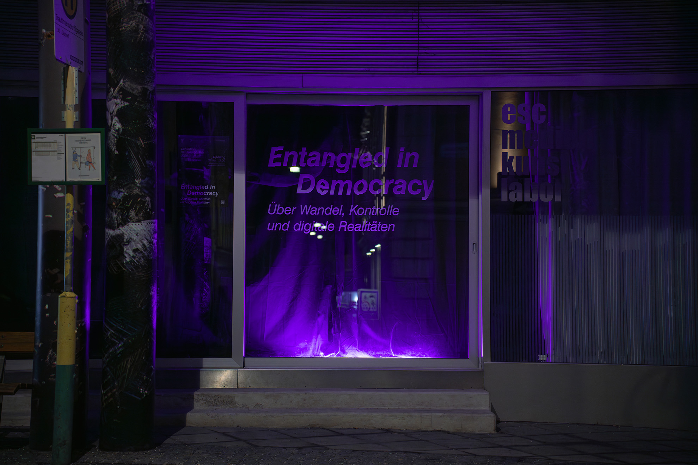
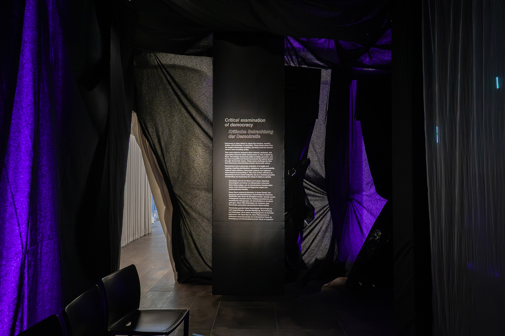
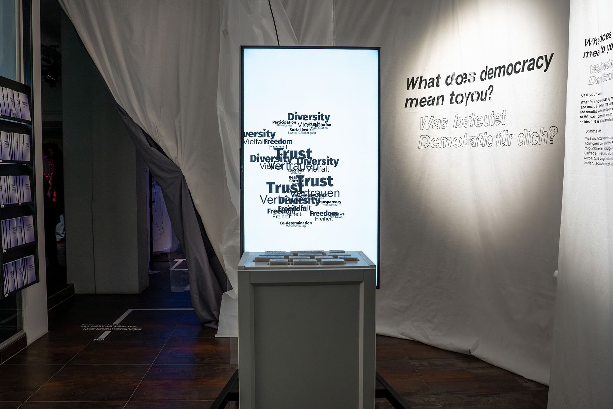
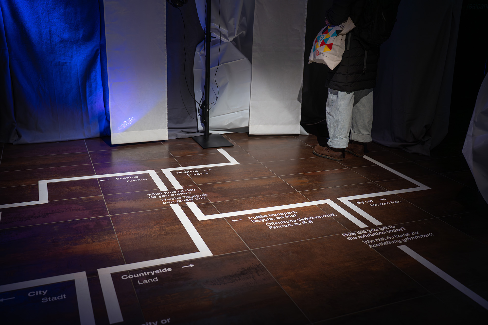
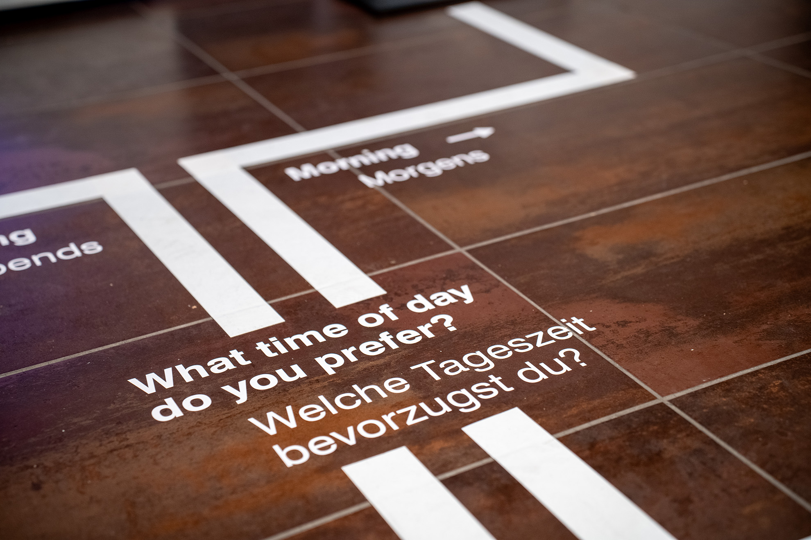
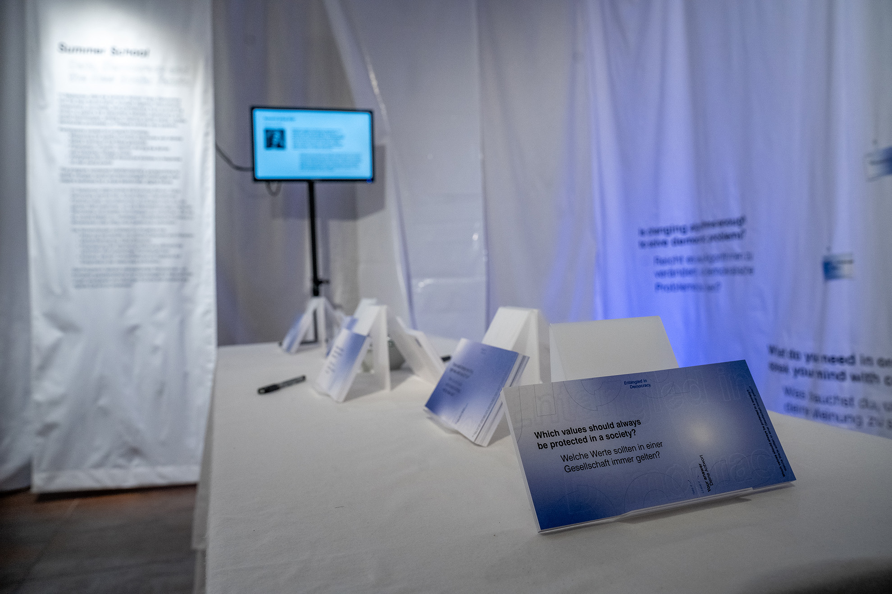
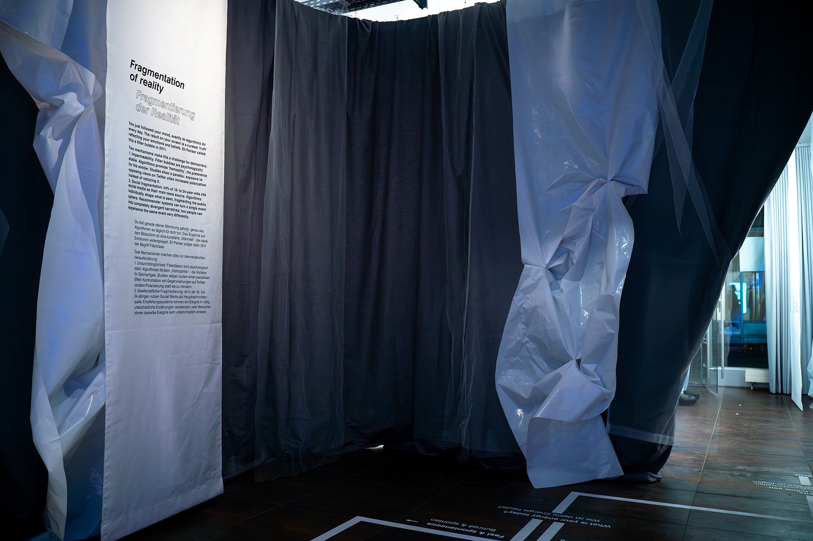

Exhibition · esc Medien Kunst Labor Graz · 31 Jan – 26 Feb 2026
What does democracy mean when reality has become negotiable?
The internet has transformed how people connect, organize, and move politically — from global solidarity movements to targeted disinformation. Social media platforms shape public discourse in ways that political systems can barely keep pace with.
"Entangled in Democracy" engages with the loss of a shared understanding of reality, unequal power structures, and the gradual erosion of democratic values.
My role was the research and the moving image work. The starting point was a critical examination of democracy and of how media report on it: the coverage of the war in Iran and of Sudan, police violence, the balance of power between the United States and China, the persecution of the Uyghurs. The scope stayed deliberately broad.
From that research came fifteen minutes of animation with sound design, split into three five minute pieces distributed across the room and projected onto gauze.
Alongside that I worked on the graphics the exhibition needed as a whole: developing its graphic concept, and designing and producing the exhibition texts.







Developed in the master's program in exhibition design at FH Joanneum Graz, in cooperation with esc Medien Kunst Labor and the research group Complex Social & Computational Systems at IDea_Lab, University of Graz.